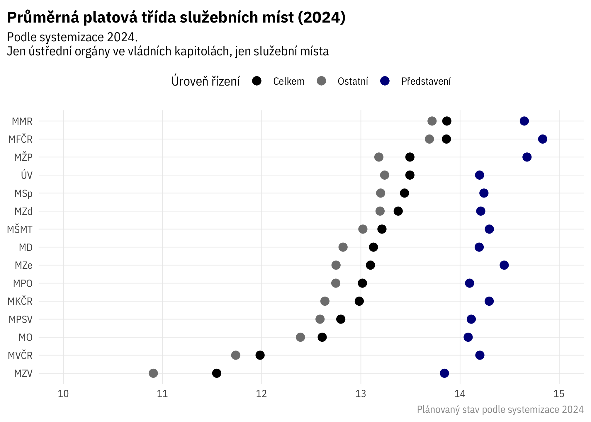
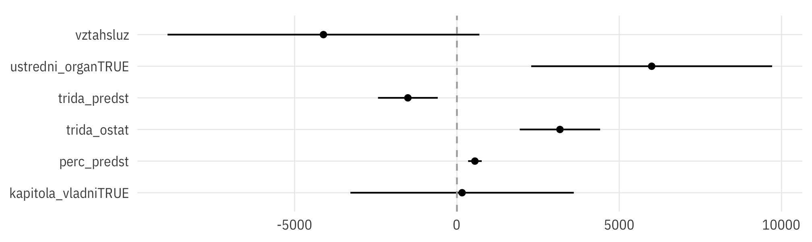

Srovnání: úřady
Průměrné platy podle systemizace

Platové třídy na ministerstvech

Model průměrného platu
OLS na úrovni skupin (instituce + služební/pracovní poměr), s využitím informací o typu organizace (vládní kapitola, ústřední orgán).

Residuals (níže) pro jednotlivé úřady ukazují, jak moc se skutečný průměrný plat liší od platu, který by odpovídal pouze vlivu proměnných zahrnutých do modelu. V praxi je residual součtem vlivu především průměrné seniority zaměstnanců (což se odráží v platovém stupni) v instituci a pohyblivých složek platu (hlavně odměn a osobního ohodnocení).
Níže rozdíly mezi predikcí a skutečností pouze pro centrální ministerstva:

Vztah mezi skutečným a modelovaným průměrným platem pro různé skupiny organizací a zaměstnanců:
Přesnější ověření modelu
Výsledek
#>
#> Call:
#> lm(formula = plat_prumer ~ perc_predst + trida_predst + trida_ostat +
#> vztah + ustredni_organ + kapitola_vladni, data = syst_platy_for_model_2022)
#>
#> Residuals:
#> Min 1Q Median 3Q Max
#> -14734.8 -3087.1 -833.3 2370.1 30610.4
#>
#> Coefficients:
#> Estimate Std. Error t value Pr(>|t|)
#> (Intercept) 27147.90 3629.55 7.480 4.11e-12 ***
#> perc_predst 331.34 71.84 4.612 7.93e-06 ***
#> trida_predst -2258.56 330.72 -6.829 1.54e-10 ***
#> trida_ostat 3586.02 451.80 7.937 2.94e-13 ***
#> vztahsluz -1867.47 1648.51 -1.133 0.259
#> ustredni_organTRUE 5525.10 1198.00 4.612 7.93e-06 ***
#> kapitola_vladniTRUE 1627.65 1139.87 1.428 0.155
#> ---
#> Signif. codes: 0 '***' 0.001 '**' 0.01 '*' 0.05 '.' 0.1 ' ' 1
#>
#> Residual standard error: 6270 on 166 degrees of freedom
#> Multiple R-squared: 0.6001, Adjusted R-squared: 0.5857
#> F-statistic: 41.52 on 6 and 166 DF, p-value: < 2.2e-16V čase
Pokud model odhadneme zvlášť v jednotlivých letech, jsou koeficienty v čase relativně stabilní.

Residuals pro jednotlivé úřady v čase:
Zdroje
TO DO